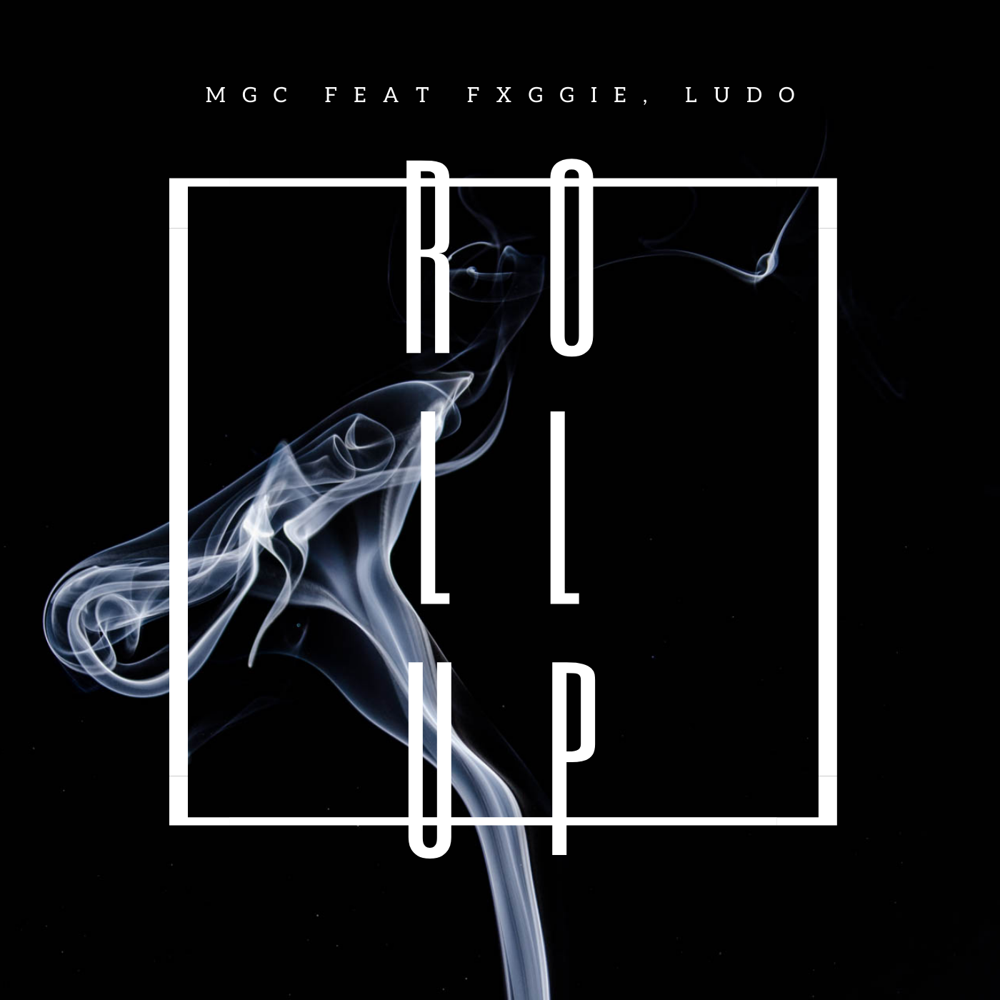
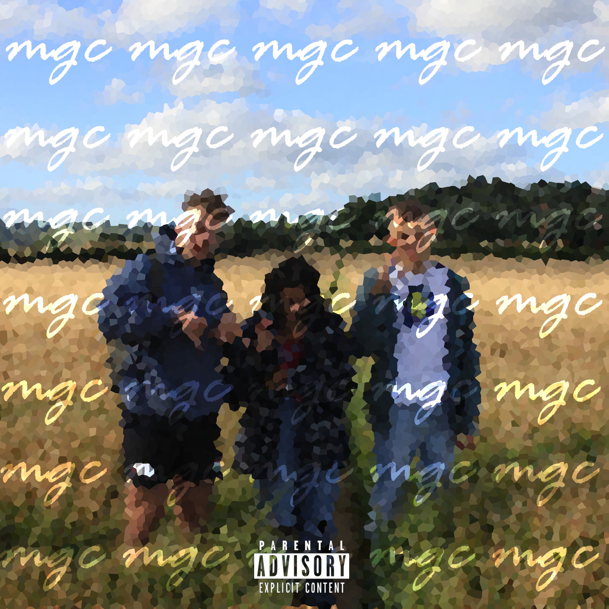

My love for gaming started before I can remember, and probably as soon as I was able to play.
My introduction began on the SNES playing Street fighter II, moving to the PS2 and Battlefont II when I was older.
I can still remember being caught playing BFII before school by my dad,
who from that point knew he should probably make sure I do things other than play video games
About me
In school, I mainly took an interest in Psychology, Politics and Spanish (my 3 A-Level subjects)
however I still enjoyed what other subjects had to offer such as creative writing in English.
Outside of education, I like to go skateboarding, make music and of course play video games.
Im very excited to find out how I will incorporate different aspects of my life into my work
within game design
Later in life I hope to be in a job in which I will find an everyday satisfaction,
this could be within game design, music or any of the other creative outlets we have avaliable to us.
As of writing this, I am yet to experience all the facets game design has to offer and I am excited to begin the different modules.
For example, I am quite exited to immerse myself in level design, narrative writing, models and animation.
I hope to find myself working a placement year
at a company in which I can say I was excited to be part of their game development.


My Music
In the summer of 2020 I began making music with two of my friends in my garage at home,
this lead to a release of an EP, and a few singles here and there on Spotify, SoundCloud and
Apple music
Check it out here